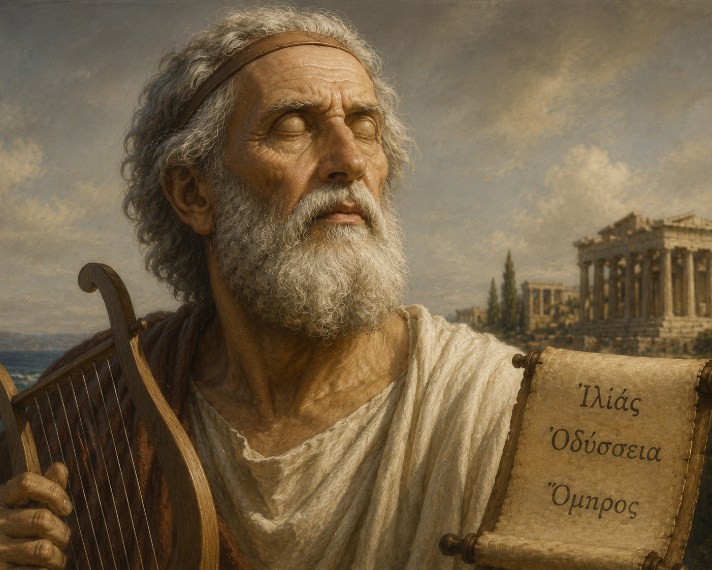
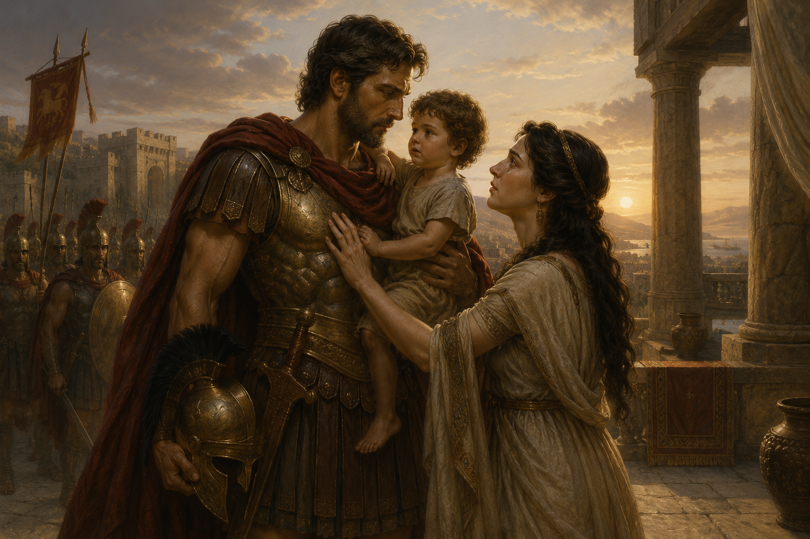

(Trích I-li-át - Hô-me-rơ)
"Trong cuộc sống, việc thực hiện bổn phận với cộng đồng và với gia đình nhiều khi mâu thuẫn. Theo bạn, ứng xử thế nào mới là hợp tình, hợp lý?"
Cốt lõi của văn bản là cuộc xung đột bi kịch giữa Bổn phận nghĩa sĩ cộng đồng (danh dự danh gia, sự sống còn của dân tộc Tơ-roa) và Tình cảm gia đình cá nhân (tình nghĩa vợ chồng, tình phụ tử). Qua đó, Hô-me-rơ ngợi ca vẻ đẹp lý tưởng của người anh hùng cổ đại Hy Lạp.
• Hô-me-rơ: Nhà thơ huyền thoại của Hy Lạp cổ đại (sống khoảng thế kỷ VIII – VII TCN).
• Theo truyền thuyết, ông bị mù và là một người hát rong kể chuyện tài năng.
• Là tác giả của hai bộ sử thi đồ sộ bậc nhất nhân loại: I-li-át (Iliad) và Ô-đi-xê (Odyssey).
• Sử thi I-li-át: Gồm 15.693 câu thơ, chia làm 24 khúc ca, kể về những sự kiện diễn ra trong 51 ngày năm thứ 10 của cuộc chiến vây hãm thành Tơ-roa (Troy).
• Vị trí đoạn trích: Thuộc khúc ca VI (từ câu 370 đến 496), tái hiện cuộc chia tay xúc động giữa dũng tướng Héc-to và vợ Ăng-đrô-mác trước khi ra chiến trường.

Hình 1: Tượng bán thân nhà thơ huyền thoại Hô-me-rơ
Mô hình diễn biến bối cảnh:
\( \text{Quân Tơ-roa thoái lui} \rightarrow \text{Héc-to về thăm nhà} \rightarrow \text{Ăng-đrô-mác lên tháp canh nức nở} \rightarrow \text{Gặp gỡ tại cổng Xké} \)
Nỗi đau thương mất mát quá đỗi trong quá khứ:
Cha (vua Ê-ê-xi-ông) và 7 người anh trai đều bị dũng tướng A-khin hạ sát; mẹ ruột bị bắt làm chiến lợi phẩm rồi qua đời đột ngột.
Mối quan hệ và lời van xin thiết tha:
"Héc-to chàng hỡi, giờ đây với thiếp, chàng là cha và cả mẹ kính yêu; chàng là cả anh trai duy nhất, cả đức lang quân cao quý của thiếp."
Nàng cầu xin Héc-to ở lại tháp canh, bố trí quân chốt chặn tại chỗ cây vả để tránh để con mồ côi, vợ thành góa phụ.
Cơ cấu động lực hành động anh hùng:
\( \text{Danh dự cá nhân/dòng họ} + \text{Trách nhiệm với cộng đồng} > \text{Nỗi sợ cái chết \& Bi kịch cá nhân} \)

Hình 2: Cảnh Héc-to từ biệt Ăng-đrô-mác và A-xchi-a-nắc (Tranh của Karl Friedrich Deckler)
❓ Lưu ý 1: Những chi tiết miêu tả hành động và tâm trạng của Ăng-đrô-mác.
❓ Lưu ý 2: Lí do nào khiến Ăng-đrô-mác không muốn Héc-to ra trận?
❓ Lưu ý 3: Lưu ý những lí lẽ khiến Héc-to vẫn quyết định ra trận.
🖐️ Hoạt động hình dung: Cảnh tượng Héc-to ôm con và tháo mũ trụ.
Câu 1: Biến cố nào dẫn đến việc Héc-to phải từ biệt Ăng-đrô-mác? Vì sao có thể xem đó là biến cố đặc trưng cho thể loại sử thi?
Câu 2: Xác định những từ ngữ lặp lại khắc hoạ đặc điểm cố định của nhân vật trong đoạn trích. Vì sao sử thi lại có cách khắc hoạ nhân vật như vậy?
Câu 3: Phân tích những đặc trưng của không gian sử thi trong đoạn trích.
Câu 4: Những lời nói, hành động của Ăng-đrô-mác thể hiện phẩm chất gì của nhân vật?
Câu 5: Vì sao Héc-to vẫn quyết định mở cổng thành nghênh chiến với quân Hy Lạp? Bạn suy nghĩ gì về hành động đó?
Câu 6: Đoạn trích đã đặt ra những vấn đề nhân sinh nào? Những vấn đề đó còn có ý nghĩa với đời sống ngày nay không? Vì sao?
Câu 7: Qua những lời nói, hành động của Héc-to, hãy xác định những phẩm chất tạo dựng nên hình mẫu người anh hùng Hy Lạp thời cổ đại.
Cảnh Héc-to từ biệt Ăng-đrô-mác được coi là một trong những cảnh tượng ấn tượng và cảm động nhất trong toàn bộ sử thi I-li-át cũng như trong lịch sử văn học nhân loại. Nhà nghiên cứu văn hóa Hy Lạp cổ đại Mi-kha-in Ga-xpa-rốp (Mikhail Gasparov) từng nhận xét rằng chính "sự tương phản bi thảm của bầu không khí chiến tranh hung hiểm với cuộc sống gia đình êm ấm" đã tạo nên sức rung động mãnh liệt xuyên thời gian.
Kết nối đọc – viết: Viết đoạn văn (khoảng 150 chữ) phân tích một chi tiết mà bạn cho là đặc sắc nhất trong đoạn trích Héc-to từ biệt Ăng-đrô-mác (Ví dụ: Chi tiết Héc-to tháo chiếc mũ trụ đồng thau sáng loáng đặt xuống đất khi con trai khóc ré lên).
Bài tập 1: Phân tích mô hình logic xung đột giữa hai hệ giá trị trong tâm trạng Héc-to qua biểu thức: \( \text{Hành động anh hùng} = f(\text{Bổn phận cộng đồng}, \text{Trách nhiệm gia đình}) \).
Lời giải chi tiết:
1. Tình cảm gia đình: Héc-to dành tình cảm tha thiết cho Ăng-đrô-mác và đứa con thơ, nhói buốt khi hình dung cảnh vợ trở thành nô lệ.
2. Trách nhiệm cộng đồng: Danh dự người anh hùng chủ soái không cho phép chàng đứng nhìn từ xa như kẻ hèn nhát.
Kết luận: Sự lựa chọn của Héc-to ưu tiên bổn phận cao cả với quốc gia dân tộc trên tình cảm cá nhân. Đây là biểu hiện cao đẹp nhất của lý tưởng anh hùng sử thi Hy Lạp cổ đại.
Bài tập 2: Phân tích ý nghĩa biểu tượng của chi tiết chiếc "mũ trụ đồng thau sáng loáng" trong cảnh chia tay giữa Héc-to và gia đình.
Lời giải chi tiết:
• Trạng thái đội mũ: Tượng trưng cho tư thế người chiến binh khốc liệt của chiến trường, sự chia rẽ giữa Héc-to và tình phụ tử đời thường (khiến đứa con hoảng sợ).
• Hành động cởi mũ: Hành động tháo chiếc mũ trụ đặt xuống đất đưa Héc-to trở về tư thế một người cha dịu dàng, nhân hậu.
• Ý nghĩa: Thể hiện sự kết hợp hài hòa giữa chất anh hùng sử thi và chất nhân văn, đời thường trong tính cách Héc-to.
Bài tập 3: Đánh giá quan niệm về số phận và lòng dũng cảm qua lời khuyên của Héc-to đối với Ăng-đrô-mác: "Đã sinh ra trên mặt đất này, chẳng một ai, dù quả cảm hay rụt rè, có thể trốn chạy được số phận."
Lời giải chi tiết:
• Thái độ trước số phận: Bình thản đón nhận cái chết và định mệnh như một quy luật tất yếu của nhân thế.
• Lòng dũng cảm: Sự khác biệt giữa kẻ quả cảm và kẻ rụt rè không phải là trốn chạy số phận, mà là thái độ dám dấn thân, hi sinh vì vinh quang và danh dự.
• Bài học: Sống có bản lĩnh, chủ động đối mặt với mọi nghịch cảnh trong cuộc đời.